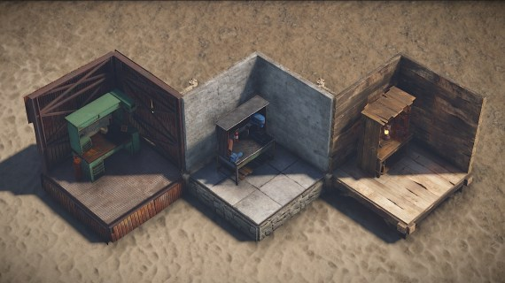
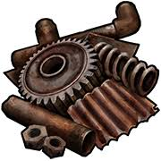
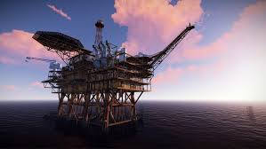
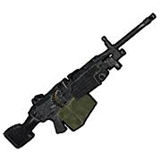

Rust, u óxido en inglés es un videojuego multijugador basado en la supervivencia en un mundo postapocalíptico, en el que tenemos
que explorar el mapa en busca de loot, investigar el mejor sítio para hacer nuestra base, y lo más importante,
asegurarnos de que esta sobreviva durante todo el wipe en el server en el que juguemos habitualmente
Rust tiene ventajas, y sobretodo desventajas, si hablamos de lo que nos aporta este juego, tenemos un mundo abierto
que permite desarrollar nuestra imaginación para crear la base más fuerte. Pero a su vez, tiene una gran desventaja, si quieres
que lo anteriormente nombrado ocurra y tu base no sea derribada por unos rusos con 10000 horas en el juego, vas a tener
que vivir conectado al servidor para que no se les pase por la cabeza destruir la base que tanto trabajo y esfuerzo te costó levantar.
A continuación, vamos a dejar una lista básica con los conceptos fundamentales para empezar en Rust.
Hacer del servidor un sitio poco pacífico (opcional)
Supervivencia
Hagamos lo que hagamos, no nos olvidemos de sobrevivir.
Al fin y al cabo ese es el objetivo básico de este juego, sobrevivir. Para ello, vamos a daros unos consejos básicos
CREATE UN SPAWN: tan pronto entres al servidor, asegúrate de conseguir tela y contruyete un saco, busca la zona para tu base y guarda tu spawn con el.
ÁRMATE:Vas a spawnear con una roca, esto no sirve para defenderse, pero si para conseguir madera, hazte una lanza y podrás salvar tus primeros enfrentamientos
GUARDA TU LOOT: De nada sirve robar un ak en el primer minuto de wipe, si no tienes en donde guardarla, contrúyete una choza o haz tu base starter tan pronto puedas
CUIDATE DE LA RADIACION: Rust es un mundo post-apocalíptico, en el que existe radiación, en ciertas rat towns te encontrarás con mucho radio. Evítalo
cubriéndote con ropa, o curándote con agua.
CURATE: Te vas a hacer daño, te van a intentar matar, y te vas a caer. Consigue tela, es fundamental para las vendas,
come y bebe, si estas en un sitio reconfortante, tu salud se restaurará.
Construcción
Una vez que tenemos claro los conceptos básicos del rust y como entrar a los servidores, vamos a ver como tener una choza para vivir.
Como recalcamos los últimos 20 párrafos, es imprescindible escoger una buena zona, para asegurarnos de tener loot, pvp y los recursos
básicos para no hacer de nuestra experiencia un muermo.
Para escoger una buena zona, es imprescindible escoger como queremos jugar, si looteando, o jodiendo rusos y robándoles el equipamiento(preferible)
Si queremos jugar de la segunda forma, nos da igual la zona con tal de que haya bases cercanas que aseguren la actividad en la zona del server.
Si por el contrario queremos jugar looteando (solo para gente aburrida), buscate una zona que sea todo lo contrario a la anteior,
que no haya bases cercanas, que tenga alguna carretera para barrilear y algún monumento
para conseguir armas, esto con la finalidad de joder a los rusos (ya nos iremos dando de cuenta de que es el propósito del juego)
Teniendo en cuenta lo anterior, vamos a ver una tabla con las mejores zonas para vivir
Recursos
Actividad
Loot
Superivencia
Comida
Nieve
Si
Si
Si
No
No
Desierto
No
No
Si
Si
Si
Montaña
Si
No
No
No
No
Pradera
No
Si
Si
Si
Si
Oasis
Nuestros desarrolladores aún no provaron la zona
Playa
No
Si
Si
Si
No
Cueva
Si
No (quien va a vivir en una cueva?)
Si
Si
No
Cañones
Nuestros desarrolladores aún no provaron la zona
Una vez escogimos la zona, es hora de hacer la base
Existen miles de diseños, y ninguno es mejor que el anterior, únicamente tenemos que dejar volar nuestra imaginación
y esconder nuestro armario lo mejor que podamos, introducir algunos peaks por si nos raidean online, y tener todo
lo suficientemente organizado para guardar nuestro loot. Tenemos una serie de materiales básicos para construir.
Materiales:
Paja: Se crea con madera, ni lo intentes, te tiran la casa con una piedra
Madera: También se crea con madera, solo se usa en early wipe, después te la tiran con molotovs
Piedra: El más usado, fácil de conseguir en la nieve o montaña y resistente, se usa durante todo el wipe
Metal: Utilizado por clanes grandes que viven en el servidor, es costoso, pero si tienes tiempo el más profit
Metal de alta calidad: solo se usa para el núcleo o en servidores modificados.
es muy caro, difícil de conseguir y difícil de mantener
Puertas
Madera: Solo para el inicio del wipe, fácil de craftear
Metal: De las más usadas, fácil de conseguir y no muy fácil de raidear
Metal doble: Igual que la de metal pero doble, no cambia el manteniemiento, solo por comodidad
Garaje: La más usada en el interior de la base, la más fácil de conseguir y de las más difíciles de raidear
Puerta hq: Muy cara, usada para los tugboats y en servidores 10x
Puerta doble hq: Igual a la hq pero con dos puertas, no se suele usar
Teniendo ya seleccionados los materiales, en Rust, como en la vida, está todo estudiado, lo que incluye las base más seguras.
Adjuntamos a continuación un Enlace a los mejores tutoriales de la casas
más seguras.
Wipes
"Los wipes en rust son el factor más importante para mantener el juego con vida."
Esta es probablemente la frase más destacada de FacePunch, y que refleja la importancia de los wipes.
Como ya explicamos anteriormente, los wipes son un reinicio completo de los servidores, tanto oficiales como de la comunidad que se realizan
el primer jueves de cada mes. Además, estos reinicios incluyen parches o actualizaciones que
introducen nuevos elementos, cambios de mapa, vehículos, etc. Esta particularidad, hace que el interés por el juego no decaiga,
pero tambien implica que el juego tenga dos fases básicas:
Early Game:
Es la primera parte del wipe, en la que la gente aún no dispone de instrumentos para raidear o armas potentes
para marcar la diferencia en el servidor. En esta parte, que suelen ser las primeras 12/24 horas, es importante que estemos el mayor
tiempo posible conectado al servidor, para conseguir armas lo antes posibles y poder establecerte como una "potencia" en el servidor.
Later Game:
Es la parte más tardia del juego, cuando los servidores empiezan a perder usuarios y empizan a aparecer bases
abandonadas. En esta parte del juego es recomendable no empezar en un servidor, ya que la gente irá perfectamente equipada y la supervivencia
en el mismo será realmente difícil. Es importante tener una base fuerte, ya que en esta fase, el objetivo principal es hacerle un boquete
lo más grande posible a todas las bases que veas, por pequeña que sea.
Tier
Acabamos de llegar a la parte donde decides tu futuro, el honor y la gloria, o ser un chinofarmer
Rust nos permite dos modos de juego de forma no literal, el de ser un hombre y ganar los recursos matando a otros ususarios y
robandole sus equipamientos y bases, o la del que tiene menos aim que una señora de 80 años (con
todo el respeto a las señoras de 80 años).
En Rust disponemos de lo que llamamos crafteos, y se pueden realizar en dos zonas, o en el propio inventario,
o en un banco de trabajo.
Los bancos de trabajo
Disponemos de 3 niveles de bancos de trabajo, dándonos, según el banco que tengamos, unas armas y equipamiento
más poderoso que el anterior. Cada bando tendrá un árbol de tecnologías, y estas se pueden desbloquear con el elemento base
del juego, LA GLORIASA CHATARRA. No subestimes su nombre ni su aspecto
roñoso, porque realmente este elemento puede hacerte desde la persona más rica del servidor, hasta un ludópata
que tiene el saco en zona segura y no sabe disparar, eso si, te conoce el algoritmo del black jack de pe a pa.

Teniendo claro que es un banco de trabajo y como usarlo, vamos con los tres niveles disponibles:
Tier 1:
Nos ofrece el revolver y escopetas básicas, la primera ropa y elementos básicos para raidear
bases de madera como mucho.
Tier 2:
Es el más usado, ofrece fusiles semiautomáticos y subfusiles de corto alcance, además de ropa, curas
y elementos esenciales para el pvp.
Tier 3:
Poco usado, muy codiciado. Tienes tres formas de conseguirlo, o lo crafteas por 1250 de chatarra, o lo robas
raideando, o te vas al casino a jugarte toda la chatarra para ver si toca la flauta. Te otorga las equipaciones, armas y elementos
de raideo más potentes del servidor. Tener este banco de trabajo es asegurarte el éxito durante buena parte del wipe.

Rat Towns
Para conseguir armas y equipamiento, necesitamos ir a los monumentos
Los monumentos son zonas creadas automáticamente por el juego. En ellos nos encontraremos con estructuras que tendran algún tipo de parkour
para poder desbloquear cajas de distinto nivel. En Rust hay 5 tipos distintos de "cajas":
Barriles: Contienen componentes para crafteos y 2/3 trozos de chatarra
Cajas de herramientas: Nos proporcionan items como arcos, prismático o motopicos, además de trozos de chatarra
Cajas normales: Proporcionan casi todos los elementos básicos, aunque unos con más probabilidad que otras,además, te pueden tocar escopetas y trozos de chatarra
Cajas militares: Estas son las que se encuentran exclusivamente en las rat towns, contienen equipamiento y armas de nivel avanzado
Drops aéreos: Son la forma más fácil de obtener armas en el early game, hay dos formas de que aparezcan, o mediante spwneo (aparece un avión y lo tira, haciendo que
gran parte de los jugadores puedan ir hacia el mientras cae), o consiguiendo una granada de humo que llamará al avión y te tirará el drop donde se lo indiques. Estas granadas
se pueden obtener en las cajas militares o hackeadas de las rat towns más complejas.
Cajas Hackeadas: Se encuentran tambien en las rat towns, en la plataforma pertrolera o en el barco carguero, estas contienen los mejores elementos del juego,
pero para desbloquearlas debes esperar 15 minutos desde que se activan y luchar contra otros players por ella, ya que su ubicación se revela en el mapa
Teniendo en cuenta como conseguir los componentes, vamos a ver la lista de las mejores rat towns
Plataforma petrolífera: Ambas se encuentran en el mar, la diferencia entre ambas es la facilidad
de defenderse que otorga la petro grande mientras espera a que se desbloquee la caja hackeada
Petro grande
Petro pequeña

Carguero: No es una rat towm como tal, ya que este spawnea en el mar cada cierto tiempo,
otorga hasta un máximo de tres cajas hackedas, pero suele ser el objetivo de grandes clanes de rusos, por lo que defenderlo es relativamente complicado
Base Ártica: es totalmente dependiente de la creación del mapa, ya que siempre aparecerá en la nieve. en ella podemos conseguir la moto
de nieve y cajas militares
Excavadora Gigante: al igual que la anteior, esta siempre spawneará en el bioma de desierto independientemente de la
generación del mapa, es el mayor objetivo de clanes grandes de rusos, ya que proporciona grandes cantidades de
materiales, hay que hacerla funcionar con barriles de diesel, que se encuentran en la plataforma petrolífera y alguna otra rat town.
La cúpula: spawnea en un bioma totalmente aleatorio, es un monumento mítico, ya que fue el primero en introducirse, otorga una gran cantidadad
de cajas normales, además de un máximo de 5 cajas militares. Es un monumento imprescindible para el early wipe, aunque necesitaremos protegernos de la radiación
Zona de Lanzamiento: es la rat town más grande, en ella hay zonas con cajas y demás loot, pero su elemento más
importante es el tanque, este se puede destruir con misiles de alta velocidad, y al romperse, te otorgará cajas militares con objetos para raideo.
Helicóptero de Combate: Este tampoco es una rat town como tal, es un helicóptero que aparece cada cierto tiempo, pero cuidado, si estás armado te va
a disparar. Si consigues tirarlo, te proporcionará un loot similar al tanque, pero además cabe la posibilidad de que te dropee una M249.

Planta potabilizadora: Esta rat town no tiene un aporte específico, pero tiene una peculiaridad, y es que en ella puede spawnear una caja hackead, pero hay que tener cuidado en ella, puede contener
radiación en ciertas zonas
Supermercado: LA RAT TOWN, EL MONUMENTO, LA JOYA, es una mierda, no tiene nada, pero si tienes suerte, puede salvarte el early wipe. En ella aparecen cajas básicas y, si tienes suerte, una crate militar.
Raideos
Ha llegado el momento de eliminar a los rusos del server
Los raideos, es un arte, para que nos vamos a engañar, puedes o hacerte rico, encontrar novia y ser un triunfador en la vida con tus crios, el perro y el chalet con piscina o perderlo todo.
La definición en wikipedia de raideo es:"En la jerga gamer, raidear implica unirse a varios jugadores en modo multijugador online para hacer
frente a algún desafio que sería imposible afrontar en solitario"(vaya burrada acaba de soltar mi colega wikipedia).
Lo que os diga, a wikipedia caso, poco. La definición de raideo, para tontos, es entrar a una base utilizando algun tipo de arma y/o explosivo con el objetivo de robar la base y/o el contenido de la misma.
Aunque realmente, el arte del raideo se puede realizar de varias formas, lo que incluye la defensa.
Vamos a ver que tipos de raideos tenemos
Raideo
Online: Con los integrantes de la base conectados (+dificultad, +diversión)
Raideo normal: entramos rompiendo paredes, puertas o techos y llegamos hasta donde las armas nos lo permitas
Going deep(Pa' entro): estando el dueño o algun habitante de la base conectado, aprovechar que abre la puerta exterior para matarlo e ir entrando hasta donde nos deje repitiendo la acción
Offline: Con los integrantes de la base desconectados (+aburrimiento,+seguridad)
Counter Raid: Aprovechando que alguien está raideando una base (ya sea online y offline), atacarle desde fuera para continuar el raideo y robar el loot
Defensa de Raideo: Solo para raideos online, el que tiene un boquete en la casa eres tu, defiendete si puedes y como puedas
Conclusión: el raideo es un arte, tiene 1000 formas de realizarse y mientras consigas tu objetivo siempre va a ser una forma correcta. Da igual el número de integrantes, si has llegado al núcleo o si
simplemente as conseguido que los rivales se desconecten.
Streamers
Todo el mundo sabe, o debería, que viendo, se aprende. Es por ello que a continuación, dejamos una tabla con los horarios de los mejores streamers españoles de rust.
Rust tiene una particularidad, nos permite ver en todo momento que pasa en nuestra base desde nuestro móvil.
Para conseguir lo anteriormente citado, debemos de conectar nuestro móvil con Steam mediante Rust+, una aplicación
creada por FacePunch que podemos encontrar en la AppStore o
PlayStore.